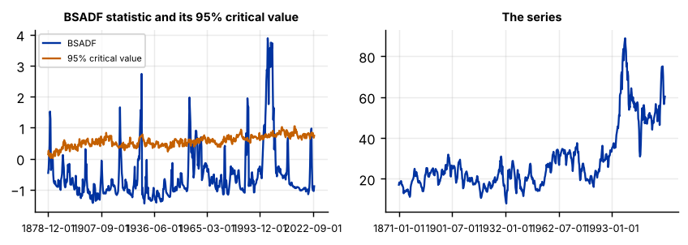

Run this model on your own data in Open Econometric Systems →
Step 1The question and the model
Did prices ever grow faster than a random walk? For a series \(y_t\) the ADF regression is
and a unit root (\(\rho = 0\)) is tested against the right-tail alternative \(\rho > 0\): an explosive root, growth that feeds on itself. Three statistics use different windows:
| Statistic | Windows |
|---|---|
| ADF | The whole sample |
| SADF (Phillips, Wu and Yu 2011) | Sup of the ADF over windows that start at the first observation and end at \(r_2\) |
| GSADF (Phillips, Shi and Yu 2015) | Sup over all windows \([r_1, r_2]\) with at least \(r_0 = T(0.01 + 1.8/\sqrt T)\) observations: it can find several bubbles |
The backward SADF at \(r_2\), \(\text{BSADF}(r_2) = \sup_{r_1}\text{ADF}_{r_1}^{r_2}\), is compared with its critical value at every date to date-stamp the episodes: an episode starts when BSADF crosses above its critical value and ends when it falls below. Critical values are simulated from random walks (with a drift that vanishes with the sample size) of the same length, so they depend on the sample and the minimum window.
A rise in the price can reflect rising fundamentals. The price-dividend ratio holds dividends fixed, so an explosive ratio is harder to attribute to fundamentals.
How to write it: the model
We test for explosive behaviour in the monthly price-dividend ratio of the S&P 500 with the SADF and GSADF tests of Phillips, Wu and Yu (2011) and Phillips, Shi and Yu (2015). The ADF regression has a constant and no lags, the minimum window is the rule \(T(0.01 + 1.8/\sqrt T)\), and critical values come from 200 simulated random walks with a vanishing drift of the same length. Episodes are dated where the backward SADF exceeds its 95% critical value for at least log(T) consecutive months.
Step 2Load the data
import numpy as np
import pandas as pd
import oes_engine as oes # pip install -e open-econometric-systems/oes-engine
data = open("shiller.csv").read()
d = pd.read_csv("shiller.csv")
print(len(d), "months,", d.date.iloc[0], "to", d.date.iloc[-1])
print("price-dividend ratio: mean %.1f, min %.1f (%s), max %.1f (%s)" % (d.pd_ratio.mean(), d.pd_ratio.min(), d.date[d.pd_ratio.idxmin()][:7], d.pd_ratio.max(), d.date[d.pd_ratio.idxmax()][:7]))
for yr in ("1929-09", "1987-08", "2000-08", "2021-12"):
row = d[d.date.str.startswith(yr)]
if len(row):
print(yr, "price-dividend ratio:", float(row.pd_ratio.iloc[0]))1830 months, 1871-01-01 to 2023-06-01 price-dividend ratio: mean 28.8, min 7.2 (1932-06), max 90.2 (2000-08) 1929-09 price-dividend ratio: 33.2979 1987-08 price-dividend ratio: 38.243 2000-08 price-dividend ratio: 90.2101 2021-12 price-dividend ratio: 77.4006
How to read it
The series has 1,830 months from January 1871 to June 2023. The price-dividend ratio averages 28.8; its lowest value is 7.2 (June 1932, the bottom of the Depression) and its highest 90.2 (August 2000). It stood at 33.3 in September 1929, 38.2 in August 1987 and 77.4 in December 2021. A ratio is used because it holds dividends, the simplest measure of fundamentals, fixed.
Step 3The tests
spec = dict(y="pd_ratio", time="date", reps=200, seed=1)
r = oes.run("bubble", data, spec)
oes.summary(r)
oes.show(r, "Tests for explosive behaviour")Observations: 1830
SADF: 3.462
GSADF: 4.16
GSADF 95% critical value: 2.403
Episodes: 7
Tests for explosive behaviour
Statistic 10% critical value 5% critical value 1% critical value Monte Carlo p-value
Test
SADF (right-tailed ADF, expanding window) 3.4619 1.2831 1.6627 2.2506 0.0
GSADF (generalised: flexible start and end) 4.1603 2.1771 2.4030 2.6398 0.0
Note: Critical values from 200 random walks of length 1830 with a vanishing drift; minimum window 95 periods; ADF regression without lags.How to read it
Both tests reject a unit root against an explosive alternative with Monte Carlo p-values below 0.005 (none of the 200 random walks had a statistic as large). The SADF statistic is 3.46, against a 5% critical value of 1.66 and a 1% value of 2.25. The GSADF is 4.16, against 2.40 (5%) and 2.64 (1%). The GSADF is the more powerful test when there is more than one bubble, and the data show several. The note gives the minimum window, 95 months, from the rule \(T(0.01 + 1.8/\sqrt T)\), and the number of simulated random walks.
Step 4Date the episodes
oes.show(r, "Date-stamped")
oes.plot(r)Date-stamped episodes of explosive behaviour (BSADF above its 95% critical value)
End Periods Peak BSADF
Start
1879-07-01 1880-04-01 10 1.8147
1917-09-01 1918-04-01 8 1.6555
1928-10-01 1929-10-01 13 2.7345
1955-04-01 1956-04-01 13 1.9729
1958-11-01 1959-08-01 10 1.1529
1987-01-01 1987-09-01 9 2.4887
1996-10-01 2001-08-01 59 4.1603
Note: Episodes shorter than log(T) = 7 periods are discarded (Phillips, Shi and Yu 2015).
How to read it
The backward SADF dates seven episodes. The earliest are 1879 to 1880 (10 months) and 1917 to 1918 (8 months). The 1920s bubble runs from October 1928 to October 1929 (13 months, peak statistic 2.73): the test dates the bubble to the year before the crash. Two postwar episodes follow, 1955 to 1956 (13 months) and 1958 to 1959 (10 months), then the pre-crash run-up of January to September 1987 (9 months, 2.49). The longest and strongest episode is the dot-com bubble, October 1996 to August 2001, 59 months with a peak statistic of 4.16, which is also the GSADF statistic. The two charts show the BSADF sequence against its 95% critical value and the ratio.
Step 5Robustness: the minimum window and the price alone
for label, extra in (("minimum window 100 months", dict(min_window=100)), ("minimum window 60 months", dict(min_window=60))):
rr = oes.run("bubble", data, dict(spec, reps=100, **extra))
print("---", label)
print([ (x[1], x[2], x[3]) for x in rr["tables"][0]["rows"] ][:2])
print("episodes:", [(x[0][:7], x[1][:7]) for x in rr["tables"][1]["rows"] if x[0] != "none"])
rp = oes.run("bubble", data, dict(spec, y="price", reps=100))
print("--- the price alone (not the ratio)")
print([(x[1], x[3]) for x in rp["tables"][0]["rows"]])
print("episodes:", [(x[0][:7], x[1][:7]) for x in rp["tables"][1]["rows"] if x[0] != "none"])--- minimum window 100 months
[(3.461887, 1.21236, 1.422637), (4.160296, 2.183958, 2.408782)]
episodes: [('1879-05', '1880-04'), ('1917-09', '1918-05'), ('1928-09', '1929-09'), ('1955-06', '1956-04'), ('1958-10', '1959-12'), ('1987-01', '1987-09'), ('1996-10', '2001-08'), ('2021-06', '2022-01')]
--- minimum window 60 months
[(3.461887, 1.222668, 1.422637), (4.160296, 2.415344, 2.620794)]
episodes: [('1878-09', '1880-04'), ('1886-08', '1887-05'), ('1917-08', '1918-05'), ('1928-09', '1929-09'), ('1945-09', '1946-06'), ('1954-07', '1956-04'), ('1958-10', '1959-08'), ('1987-01', '1987-09'), ('1995-11', '1996-06'), ('1996-10', '2001-08'), ('2008-10', '2009-04'), ('2021-06', '2021-12')]
--- the price alone (not the ratio)
[(19.808436, 1.422637), (19.808436, 2.427721)]
episodes: [('1880-12', '1881-11'), ('1901-02', '1902-10'), ('1905-10', '1906-04'), ('1926-07', '1929-10'), ('1945-12', '1946-07'), ('1951-02', '1953-05'), ('1953-12', '1974-07'), ('1975-02', '1975-08'), ('1975-10', '1977-11'), ('1978-04', '1982-05'), ('1982-07', '2008-09'), ('2009-09', '2023-06')]How to read it
Minimum window. With a minimum window of 100 months the episodes are essentially the same (1879 to 1880, 1917 to 1918, 1928 to 1929, 1955 to 1956, 1958 to 1959, 1987 and 1996 to 2001) and a short episode from June 2021 to January 2022 appears. With a window of 60 months more short episodes appear (1886 to 1887, 1945 to 1946, 2008 to 2009), and the GSADF critical values rise (5%: 2.62): a shorter minimum window makes the test pick up shorter and weaker episodes. The big three, 1929, 1987 and 1996 to 2001, are present for every choice.
The price alone. For the price level the GSADF statistic is 19.8 against a 5% critical value of 2.43, and the episodes cover most of the postwar period: from 1953 to 1974 and from 1982 to 2008 and again from 2009. A price series that grows with the economy and with dividends will look explosive in any long expansion; the ratio is the better test of a bubble, because dividends grow and the ratio does not need to.
Step 6Diagnostics: size and dating accuracy
rng = np.random.default_rng(0)
rej = 0
for s in range(40): # random walks: the test should reject about 5% of the time
y = 100 + np.cumsum(rng.normal(size=300))
rs = oes.run("bubble", pd.DataFrame(dict(t=range(300), y=y)).to_csv(index=False), dict(y="y", time="t", reps=100, seed=s))
rej += rs["tables"][0]["rows"][1][5] < 0.05
print("random walks (T = 300): GSADF rejects at the 5%% level in %d of 40 samples" % rej)
hit, starts = 0, []
for s in range(20): # a 40-period explosive episode (growth of 3% a period) starting at t = 150
e = rng.normal(size=300); y = np.empty(300); y[0] = 100
for t in range(1, 300):
y[t] = y[t - 1] * (1.03 if 150 <= t < 190 else 1.0) + e[t] if t < 190 else (y[t - 1] - 0.3 * (y[t - 1] - 100) + e[t] if t < 215 else y[t - 1] + e[t])
rs = oes.run("bubble", pd.DataFrame(dict(t=range(300), y=y)).to_csv(index=False), dict(y="y", time="t", reps=100, seed=s))
eps = [int(x[0]) for x in rs["tables"][1]["rows"] if x[0] != "none"]
near = [e0 for e0 in eps if 130 <= e0 <= 200]
hit += bool(near)
if near: starts.append(near[0])
print("explosive episode detected in %d of 20 samples; median dated start %d (true 150)" % (hit, np.median(starts)))random walks (T = 300): GSADF rejects at the 5% level in 2 of 40 samples explosive episode detected in 20 of 20 samples; median dated start 152 (true 150)
How to read it
For random walks of 300 observations the GSADF rejects at the 5% level in 2 of 40 samples, which is within the sampling range for a 5% test (the standard error is about 3.5 percentage points). With an explosive episode of 40 periods (3% growth a period, starting at period 150) followed by a collapse, the test detects it in all 20 samples and the median dated start is period 152. The test suite checks the ADF window statistics against statsmodels, the detection of a simulated bubble and the rejection rate under the null.
Step 7Write the results
How to write it: results
We test for explosive behaviour in the monthly price-dividend ratio of the S&P 500, January 1871 to June 2023 (1,830 months). The right-tailed unit root tests reject a random walk: the SADF is 3.46 (5% critical value 1.66) and the GSADF is 4.16 (5% critical value 2.40, 1% value 2.64), with critical values from 200 simulated random walks and a minimum window of 95 months. Date-stamping with the backward SADF gives seven episodes: 1879 to 1880, 1917 to 1918, October 1928 to October 1929, 1955 to 1956, 1958 to 1959, January to September 1987 and October 1996 to August 2001 (59 months, the strongest). The three large episodes are found with minimum windows of 60 and 100 months. The price alone is explosive in most of the postwar period, which is why the ratio is used. In simulations the GSADF rejects 2 of 40 random walks at the 5% level and detects a simulated bubble in 20 of 20 samples, dating its start within about 2 periods.
References. Phillips, Wu and Yu (2011), International Economic Review; Phillips, Shi and Yu (2015), International Economic Review; Phillips and Shi (2018), Peking University Working Paper; Homm and Breitung (2012), Journal of Financial Econometrics; Shiller (2000), Irrational Exuberance, Princeton University Press; Evans (1991), American Economic Review.